ADK is an open-source framework from Google to build AI agents. Talking about AI automation, ADK is the first choice since it provides simpler way to learn and build it.
On this session, we will create an AI automation to plan college tasks completion based on their complexity. This session covers Google Cloud Platform (GCP) preparation, enabling necessary APIs, connect to MCP server, and build the AI automation. Multi-agent approach will be used to build the AI automation.
Don't worry about your computer specification, most of our step will be done in GCP using the Cloud Shell Editor.
Let's make this session a safe place to learn. Don't hesitate to ask questions. If you have completed several steps, please feel free to assist other participants who might need help. Let's go together!
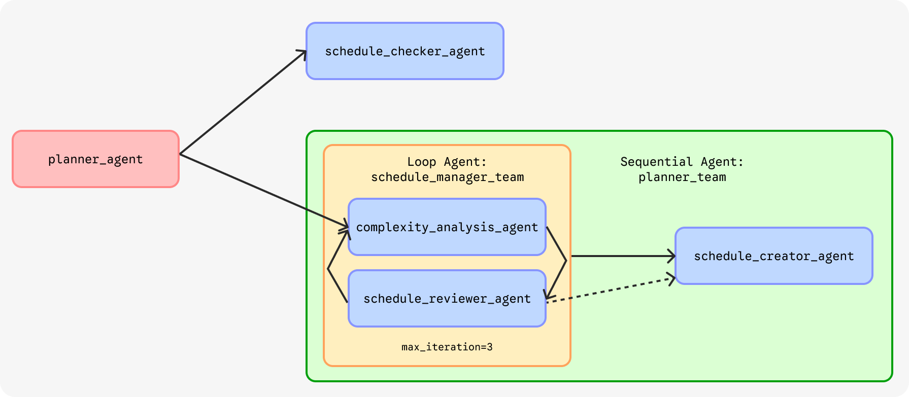
https://console.cloud.google.com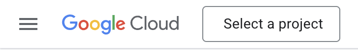
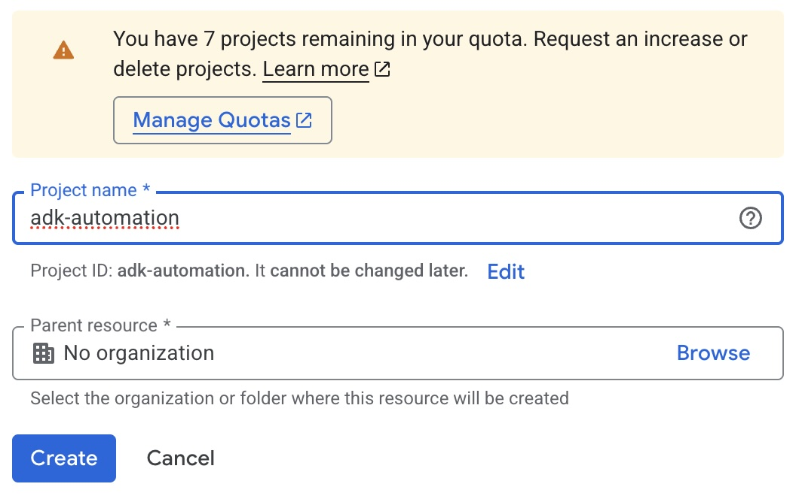
Choose one option to enable the APIs: either Cloud Console or Cloud Shell.
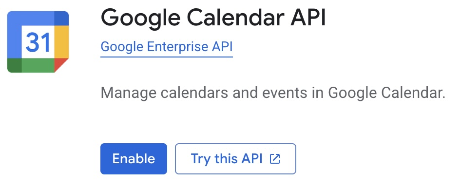
gcloud services enable calendar-json.googleapis.com --project=PROJECT_ID
choose your emailExternal, then click Next.client_secret.json.adk-automation from the listmkdir adk-automation
cd adk-automation
python -m venv env
source env/bin/activate
pip install google-adk python-dotenv
client_secret.json file to the adk-automation folder by dragging and dropping the file to the editor.export GOOGLE_OAUTH_CREDENTIALS="client_secret.json"
npx @cocal/google-calendar-mcp auth
# If prompted, type "yes" to continue
http://localhost:3500/oauth2callback?state=6787cc77143176e0a1760...curl -X GET "<paste the copied URL>"
adk create planner_agent
gemini-2.5-flash.Google AI.planner_agent will be created automatically..env file.GOOGLE_OAUTH_CREDENTIALS variable with the path to your client_secret.json file. It should look like this:GOOGLE_OAUTH_CREDENTIALS=client_secret.json
This is the example step-by-step for ADK initialization.
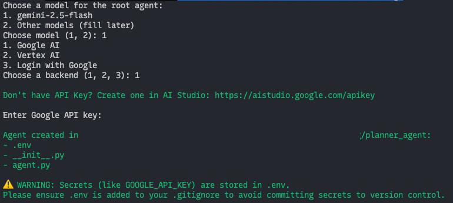
On this step and the next step, we will focus on agent.py file inside the planner_agent folder. Open the file on your editor.
root_agent definition) to import required libraries import logging
import os
from datetime import datetime
from zoneinfo import ZoneInfo
from google.adk.agents.llm_agent import Agent
from google.adk.agents import LoopAgent, SequentialAgent
from google.adk.models import Gemini
from google.adk.tools.tool_context import ToolContext
from google.adk.tools.mcp_tool import McpToolset
from mcp import StdioServerParameters
from google.adk.tools import exit_loop
from google.genai import types
from dotenv import load_dotenv
load_dotenv()
GEMMA_MODEL=Gemini(model='gemma-4-31b-it')
GEMINI_MODEL='gemini-2.5-flash'
GEMMA_MODEL for development and GEMINI_MODEL for staging. We also can use GEMMA_MODEL for less complex tasks and GEMINI_MODEL for more complex tasks.This tool will be used by agent to store and retrieve conversation states. This tool act like the "memory" for the agent. Append append_to_state function to the agent.py file.
def append_to_state(tool_context: ToolContext, field: str, response: str) -> dict[str, str]:
"""
Append new output to an existing state key.
Args:
field (str): a field name to append to
response (str): a string to append to the field
Returns:
dict[str, str]: {"status": "success"}
"""
existing_state = tool_context.state.get(field, [])
tool_context.state[field] = existing_state + [response]
logging.info(f"[Added to {field}]: {response}")
return {"status": "success"}
This tool used by agent to retrieve current date time, since the agent doesn't know about current date time by itself.
def get_current_time() -> dict[str, int|str]:
"""
Retrieve the current time and date information.
Returns:
dict: A dictionary containing the following keys:
- day (str): The current day of the week (e.g., 'Monday').
- month (int): The current month as a number (1-12).
- date (int): The current day of the month (1-31).
- year (int): The current four-digit year (e.g., 2026).
- hour (int): The current hour in 24-hour format (0-23).
- minute (int): The current minute (0-59).
- timezone (str): The timezone key'.
"""
timezone = ZoneInfo("Asia/Makassar")
now = datetime.now(timezone)
return {
"day": now.strftime("%A"),
"month": now.month,
"date": now.day,
"year": now.year,
"hour": now.hour,
"minute": now.minute,
"timezone": timezone.key
}
This tool used by agent to find out the subject code of the college subjects.
def subject_code() -> list[dict]:
"""
Retrieve the list of available subject codes offered in the college.
Returns:
list[dict]: A list of dictionaries, each representing a subject with the following keys:
- code (str): The subject code (e.g., '24SIFH16X005').
- name (str): The subject name in Indonesian (e.g., 'Statistika Dasar').
"""
return [
{"code": "24SIFH16X005", "name":"Statistika Dasar"},
{"code": "24SIFH16Y008", "name":"Struktur Data"},
{"code": "24SIFH16Y009", "name":"Sistem Operasi"},
{"code": "24SIFH16X015", "name":"Basis Data"},
{"code": "24SIFH16Y022", "name":"Analisis dan Desain Sistem"}
]
On the top of root_agent define the schedule_checker_agent. This sub-agent will be used by the root_agent to retrieve schedules from user's Google Calendar.
schedule_checker_agent = Agent(
model=GEMMA_MODEL,
name='schedule_checker_agent',
description="Check user's schedule in Google Calendar.",
instruction="""
Retrieve user's schedule based on user's request.
- Use the MCP tool to get the list of schedule.
- Use 'get_current_time' if you need to know the current date and time.
Show it to user in format:
- <day of week>, <date> <month> <year>
- <start time> - <end time>:<space><task title>
- <start time> - <end time>:<space><task title>
- ...
""",
tools=[
get_current_time,
McpToolset(connection_params=StdioServerParameters(
command='npx',
args=['@cocal/google-calendar-mcp'],
env={
"GOOGLE_OAUTH_CREDENTIALS": os.getenv("GOOGLE_OAUTH_CREDENTIALS")
}
))
],
generate_content_config=types.GenerateContentConfig(
thinking_config=types.ThinkingConfig(
include_thoughts=False # exclude thoughts from output
)
)
)
root_agentUpdate root_agent's description and instruction. Also, include schedule_checker_agent as the sub-agent of root_agent.
root_agent = Agent(
model=GEMMA_MODEL,
name='root_agent',
description='Guide the user to plan a schedule for their task completion.',
instruction="""
You are the personal assistant who help the user plan a schedule for their task completion.
If the user ask about their schedule on specific date, transfer to 'schedule_checker_agent' to give the answer.
Do not assist user with anything else beside planning a schedule and greeting, politely refuse any other requests.
""",
sub_agents=[schedule_checker_agent]
)
adk web --port 8080 --host 0.0.0.0 --allow-origins "*"
Ctrl + Click or Cmd + Click to open the ADK web interface.planner_agent.If the code and configuration are correct, the web interface will show the agent's response, like the example below.
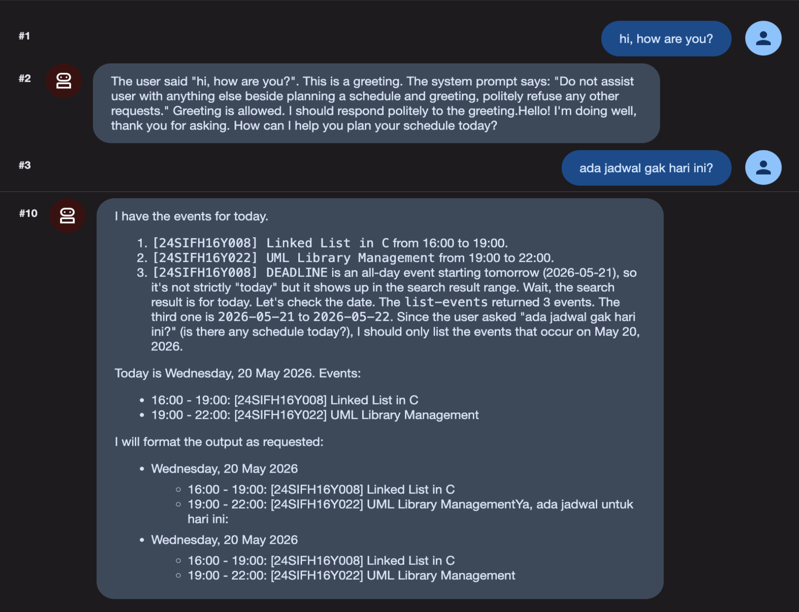
Now, let's define the planner_team which will be the core of the automation. This agent will be responsible for planning the schedule for the user's tasks.
planner_team is a SequentialAgent and consists of 2 sub-agents:
schedule_manager_team, a LoopAgent which is refine the schedule to finish certain task and arrange them with a minimal conflict.schedule_creator_agent, an Agent to create the schedule into the Google Calendar.This agent analyze the task given by user by the rules defined in the instruction. Add this agent above the schedule_checker_agent created previously. This agent write and read the state from the conversation state (e.g. TASK and DEADLINE).
We use GEMINI_MODEL here because it is better at analyzing the task and making decisions based on the rules.
complexity_analysis_agent = Agent(
model=GEMINI_MODEL,
name='complexity_analysis_agent',
description="Ananyze the complexity of the user's tasks.",
instruction="""
TASK:
{ TASK? }
DEADLINE:
{ DEADLINE? }
CONFLICT_DATES:
{ CONFLICT_DATES? }
INSTRUCTIONS:
There is a TASK with deadline DEADLINE.
Your goal is to determine the complexity of the task and decide how many days the user needs to finish the tasks.
These are the key considerations to determine the complexity of the task:
- Avoid creating a schedule on the CONFLICT_DATES if possible.
- Do not create the schedule on the deadline.
- If the task is quite simple (e.g. answering questions, providing short answers, or simple programming), then the user needs 1 day to finish the task.
- If the task is quite complex (e.g. write an essay, make an analysis, or complex programming), then the user needs 2 days to finish the task.
- Special case, if the task is complex and the deadline is more than 2 weeks, then the user needs 3 days to finish the task.
Make sure not to make schedules that are too close together.
Use 'get_current_time' tool to get the current date and time.
Generate a list of dates the user needs to do the task to finish it, don't make the duration 1 day for each schedule because user need to do other tasks.
Use this format: {date: <date to do the task>, time: <start time>, duration: <duration in hours>}
Return only a list of strings, without any additional text.
""",
output_key="schedule_dates",
tools=[get_current_time]
)
This agent reviews the schedule generated by complexity_analysis_agent and make sure it doesn't conflict with the user's existing schedule. Append this agent below the complexity_analysis_agent.
schedule_reviewer_agent = Agent(
model=GEMMA_MODEL,
name='schedule_reviewer_agent',
description="Review the user's schedule and provide feedback.",
instruction="""
SCHEDULE_DATES:
{ schedule_dates? }
INSTRUCTIONS:
Given a list of schedule dates for a task: SCHEDULE_DATES. Review it on Google Calendar using the MCP tools.
- If the selected dates on the schedule given already booked by other tasks in user's Google Calendar:
- Use the 'append_to_state' tool to append that list of tasks to 'conflict_dates' state key.
- There can only be 2 schedule/task a day.
- If there's no conflict, exit the loop using 'exit_loop' tool.
""",
tools=[
append_to_state,
exit_loop,
McpToolset(connection_params=StdioServerParameters(
command='npx',
args=['@cocal/google-calendar-mcp'],
env={
"GOOGLE_OAUTH_CREDENTIALS": os.getenv("GOOGLE_OAUTH_CREDENTIALS")
}
))
]
)
This agent simply create a schedule on the user's Google Calendar based on the schedule dates generated by the schedule_manager_team. Append this agent below the schedule_reviewer_agent.
schedule_creator_agent = Agent(
model=GEMMA_MODEL,
name='schedule_creator_agent',
description="Create a schedule for the user's task completion.",
instruction="""
SCHEDULE_DATES:
{ schedule_dates? }
DEADLINE:
{ DEADLINE? }
TASK:
{ TASK? }
SUBJECT:
{ SUBJECT? }
INSTRUCTIONS:
- Create a schedule on the user's Google Calendar using the MCP tools based on the SCHEDULE_DATES.
- To fill the <subject code> in the title, use 'subject_code' tool to get the list of subject codes based on the SUBJECT.
- Format the title for the task as follow: '[<subject code>] <Short Description of the task>'
- Use TASK and DEADLINE to generate the event desription on Google Calendar.
- Use the MCP tools to set the same color when creating the schedule from the SCHEDULE_DATES and the DEADLINE.
- Create the deadline on the Google Calendar too, use the title: '[<subject code>] DEADLINE'
""",
tools=[
get_current_time,
subject_code,
McpToolset(connection_params=StdioServerParameters(
command='npx',
args=['@cocal/google-calendar-mcp'],
env={
"GOOGLE_OAUTH_CREDENTIALS": os.getenv("GOOGLE_OAUTH_CREDENTIALS")
}
))
]
)
Create a LoopAgent which is consists of complexity_analysis_agent, schedule_reviewer_agent. Give it a name schedule_manager_team.
Finally, create a SequentialAgent which consists of schedule_manager_team and schedule_creator_agent. Give it a name planner_team.
schedule_manager_team = LoopAgent(
name="schedule_manager_team",
description="Analyze and check user's schedule to improve the schedule to complete a task.",
sub_agents=[
complexity_analysis_agent,
schedule_reviewer_agent,
],
max_iterations=3,
)
planner_team = SequentialAgent(
name="planner_team",
description="Team of agents who work together to create best fit schedule for the user's task completion.",
sub_agents=[
schedule_manager_team,
schedule_creator_agent
]
)
root_agentUpdate root_agent's description and instruction to include the new agent team.
root_agent = Agent(
model=GEMMA_MODEL,
name='root_agent',
description='Guide the user to plan a schedule for their task completion.',
instruction="""
You are the personal assistant who help the user plan a schedule for their task completion.
Ask the user what the task is and when the deadline is. Ask user to explain the task if necessary.
- Use the 'append_to_state' tool to record the user's task, subject, and deadline, store it in 'TASK', 'SUBJECT', and 'DEADLINE' state key.
- Then, transfer to the 'planner_team' to determine how many days the user needs to finish the task.
- If the user ask about their schedule on specific date, transfer to 'schedule_checker_agent' to give the answer.
Do not assist user with anything else beside planning a schedule and greeting, politely refuse any other requests.
""",
tools=[append_to_state],
sub_agents=[planner_team, schedule_checker_agent]
)
Ctrl + C, then run the command below.adk web --port 8080 --host 0.0.0.0 --allow-origins "*"
Ctrl + Click or Cmd + Click to open the ADK web interface.planner_agent.i need to submit my assignment for analysis and system design subject on 29 may 2026. I need to create the UML diagram for my library management information system. pleasee🥹
tanggal 10 juni nanti aku harus kumpul tugas makalah basis data. isinya tuh ERD retail yang udah dibangun beserta penjelasannya. aku harus buat dalam 5 bab. tolong jadwalin buat aku yaa
The agent also able to read the file given!
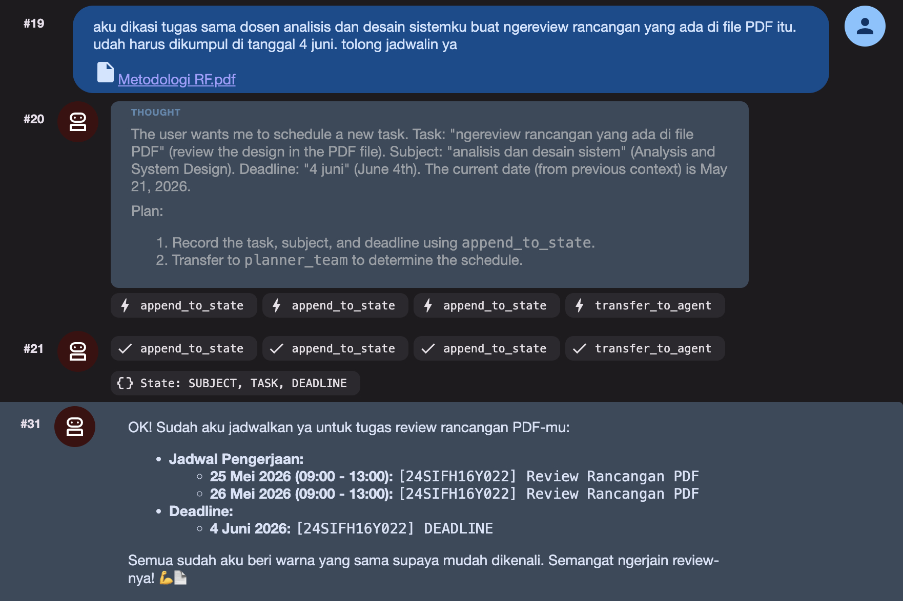
Here is the expected output:
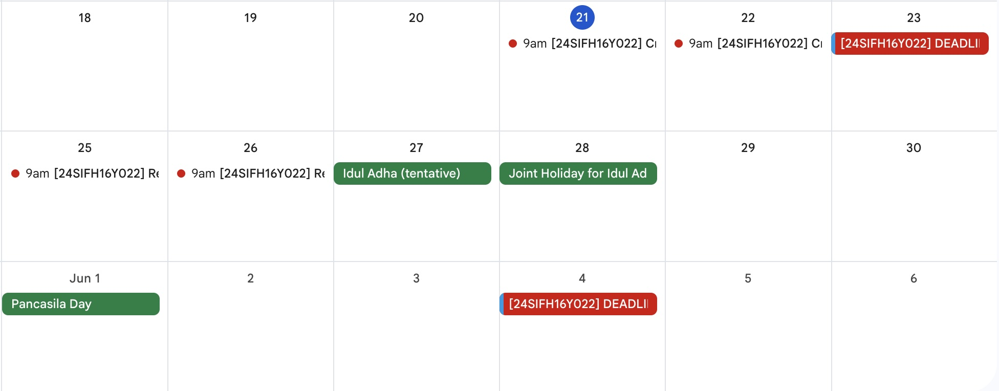
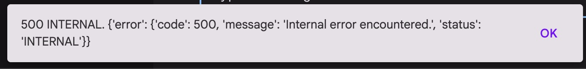
Try to send the prompt again, tell the agent to continue, or refresh the page and try again.
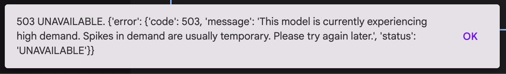
Try to change the model, check the available model at Google AI Studio.
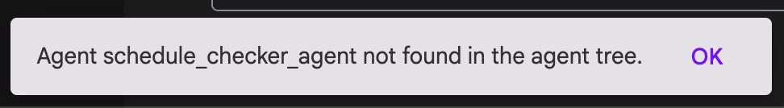
Make sure to add sub-agents to the sub_agents argument.